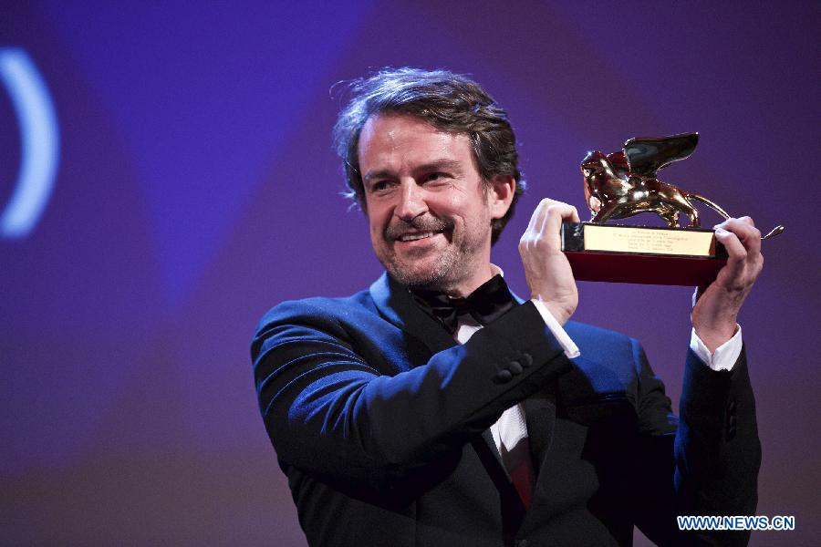
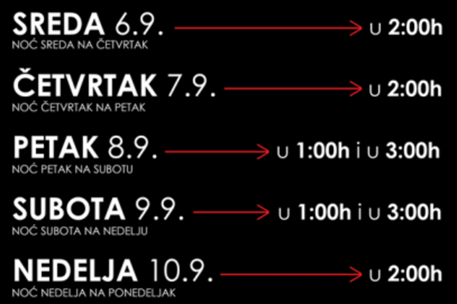
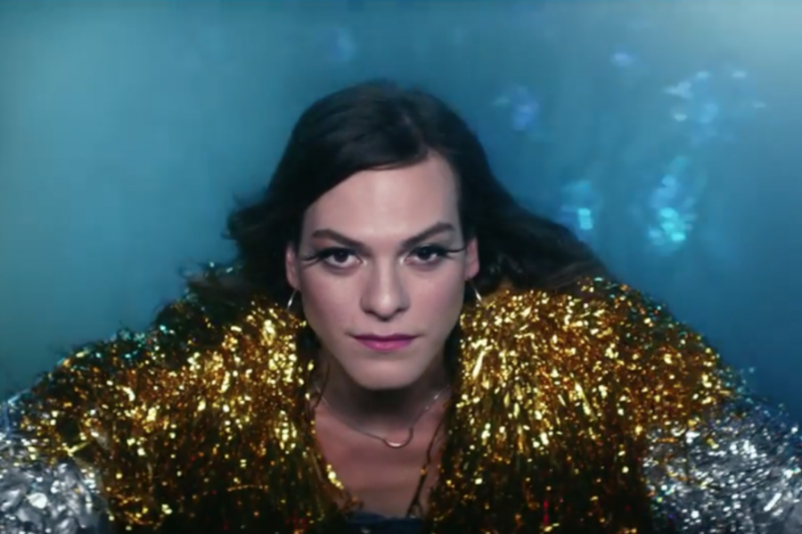

Organizovan noćni prevoz
I ove godine posetiocima festivala na raspolaganju je besplatan noćni prevoz. U saradnji Beogradskog Filmskog Festivala sa GSP-om biće organizovane sve linije sa stajalista Dom Omladine i Sava Centar.
